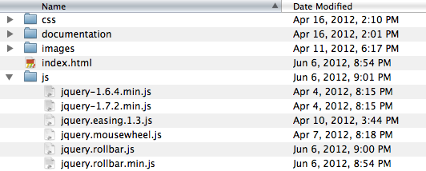

GFXFree.Net - Download Web Templates
Thank you for purchasing RollBar. If you have any questions that are beyond the scope of this help file, please feel free to email via my user page contact form - here.
Thanks so much!
RollBar plugin was created with idea to replace standard browser scrollbars and make them customizable to fit perfectly in almost any site design. This plugin can be used not only as replacement of native browser scrollbars, but even to create slideshows with external controls. Among other features RollBar can auto adjust to window size, recognize touch events on Android and iOS devices and respond to custom jquery events to scroll content. Check preview to find out the features of RollBar plugin!
When you uncompress zip file you will see following files and folders:

First start with copying plugin files to server. What you need is
css/jquery.rollbar.css js/jquery-1.7.2.min.js js/jquery.easing.1.3.js js/jquery.rollbar.min.js js/jquery.mousewheel.js
Next include these files in head section of your page
<link rel="stylesheet" href="css/jquery.rollbar.css" media="screen" /> <script type="text/javascript" src="js/jquery-1.7.2.min.js"> <script type="text/javascript" src="js/jquery.easing.1.3.js"> <script type="text/javascript" src="js/jquery.mousewheel.js"> <script type="text/javascript" src="js/jquery.rollbar.min.js">
Now we are going to activate RollBar plugin for <body> to replace browser native scrollbars. First of all you need to make sure that <body> expands to the whole window:
next activate plugin in head section of your page:
<script type="text/javascript">
$(document).ready(function(){
$('body').rollbar({zIndex:100});
});
</script>
zIndex option here is used to set z-index for scrollbars to put them on top of stack.
The same way you can activate RollBar plugin for any other block element to scroll its content, but before you need to set its "width" and "height" in css. Also you can activate rollbar() plugin for more then one element at same time:
$('body, #example1, #example3').rollbar();
Ok. At this point you should see scrollbars with default options. To customize their look you need to edit css/jquery.rollbar.css file, and to find out what configuration options you can use with RollBar plugin please read next section.
Below is a list of configuration options that plugin supports and that you can pass as argument to rollbar() plugin:
$(document).ready(function(){
$('body').rollbar({
scroll: 'both', // add 'vertical', 'horizontal' scrolling or 'both'
autoHide: true, // automatically hide scrollbars if not needed
autoHideTime: 'fast', // time to hide scrollbars
lazyCheckScroll: 1000, // check content size every NN milliseconds
blockGlobalScroll: false, // always prevent global page scroll on mouse wheel
contentFilter: '*', // selector to filter elements that should be added to RollBar
sliderSize: '30%', // % or pixel value for slider size
sliderOpacity: 0.5, // initial opacity for sliders
sliderOpacityTime: 200, // sliders mouse hover time in ms
sliderOpacityDelay: 1000, // delay before opacity change during mouse wheel
wheelSpeed: 20, // content scroll speed on mouse wheel (0 to 100)
touchSpeed: 0.3, // Android/iOS speed multiplier
pathPadding: '20px', // scrollbar path padding
keyScroll: 100, // amount of pixels to scroll when key is pressed
scrollTime: 500, // scroll time (keypress, touch, "rollbar" ) in ms
scrollInterval: 15, // scroll easing interval in ms (~fps)
scrollEasing: 'swing', // any valid easing (default linear)
zIndex: 100, // scrollbars css z-index
onscroll: function(){} // onscroll callback function (DOM,vscroll,hscroll)
});
});
Additional note about 'onscroll' callback function. This function can accept three arguments, where first one is DOM element, that rollbar plugin is activated on, second is amount of vertical scroll (value from 0.0 to 1.0) and third - amount of horizontal scroll (value from 0.0 to 1.0).
In order to interact with RollBar plugin from external code you should use custom "rollbar" event that should be sent to element using .trigger() jQuery function. To the .trigger() function you should pass 2 arguments. First one is event name - "rollbar", second is an array - [vscroll,hscroll], which specifies amount of vertical and horizontal scroll. Let's assume we have activated RollBar plugin on some div element with ID #example
$(document).ready(function(){
$('#example').rollbar();
});
and now we want to be able to scroll content of #example vertically by 200px up and down, by clicking links on page called "Scroll Up" and "Scroll Down". To do this we register onclick handlers for both links that call .trigger() function:
Scroll Up Scroll Down
Here is what you should know about [vscroll,hscroll] array. If you want to scroll page only vertically, you can omit second element of array and pass array to .trigger() only with one element - [200] or just number 200 (see http://api.jquery.com/trigger/). Numbers in array greater then 1 are considered as pixels and they specify absolute amount of content scroll. Numbers between 0.0 and 1.0 define content scroll as percents from whole content size, like number 0.5 will scroll content 50% up. Specifying 0.0-1.0 is handy when content size changes, and you don't know the size exactly. This way you allow plugin to make calculations on its own. Few notes about positive and negative numbers and direction of scroll. For vertical scroll positive number leads to the content being scrolled down, while negative - up. For horizontal scroll positive number leads to the content being scrolled right, while negative - left.
Also instead of array you can pass "reset" string to the trigger() call. In this case RollBar will reset the scrollbars and content to 0 position:
ResetThat's all.
Thanks for reading!